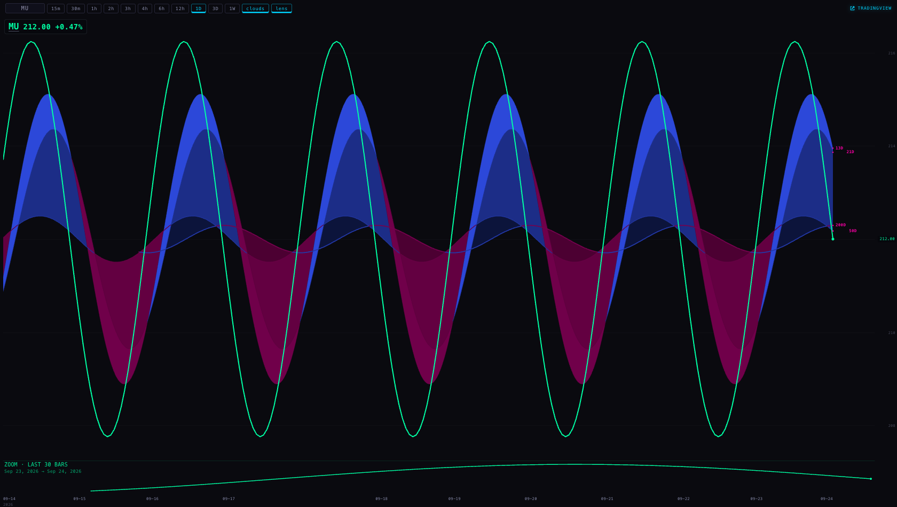
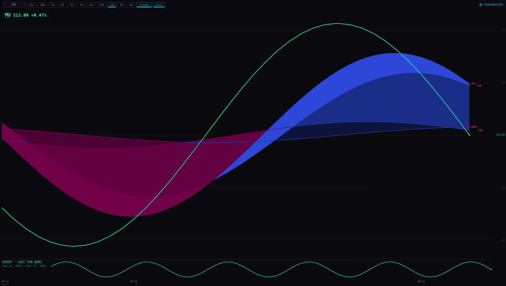
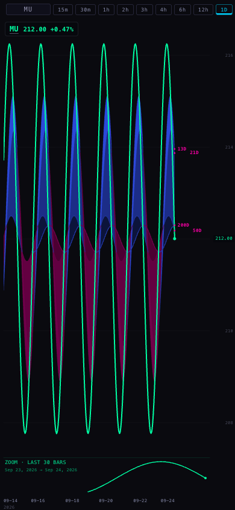
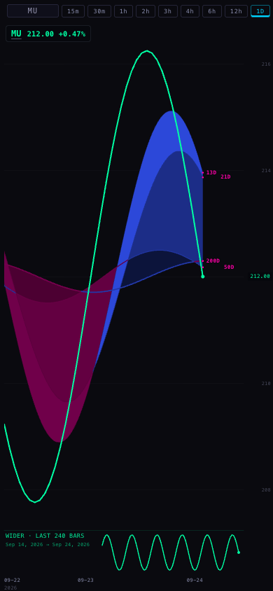

Every Station chart carries a second, much smaller view of the same live bars, at the opposite zoom, in its own band under the price. Zoom the chart out and the band zooms in on the last 30 bars. Zoom the chart in and the band pulls back to six times what you are looking at. Both views always end on the same bar. Nothing is deployed: this sits on branch station/lens-mount-20260924, built from the live Station 0411927.
“Seems to replay in the zoom level of history. I don't really care about that. I care about the zoom in current bars.” · “It's just a view of the current bars with the opposite view, and another view of the one that we're in on the charts and what it is.” — Alan, 23 Sep, ~11:40 PM ET
?lens=0 on a chart link turns it off for a screenshot or a deep link.The brief offered two placements: a small box tucked into a corner the price line rarely uses, or a thin strip under the chart. I built the corner box first, using M47's placement rule (never cover the price line, never cover the newest fifth of it, take the emptiest corner, and hold still while it is read). Then I measured it, and it failed for a plain reason.
A Station chart fits the visible high and low of the window to the height of the pane. The price line therefore sweeps the whole height of the pane, always — it is not a line that leaves a quiet corner. With the chart zoomed out over 240 bars, every one of the six candidate corners was refused for covering the price, at 1680 and at 390 alike, so the lens simply did not appear — exactly in the view Alan spends most of his time in. A lens that vanishes when you zoom out is worse than no lens.
So the lens gets its own reserved band. The pane takes that band out of its height before it scales the price, so the main chart is drawn shorter by exactly that much and the two can never overlap. Consequences, all of them good on a wall:
The band is 18% of the pane height, never less than 38px and never more than 70px. At 1680×921 that is 70px out of 921 (the price keeps 92%). At 390 it is the same 70px out of 815. A pane under 220px wide or 150px tall gets no band at all and is drawn exactly as it was before the lens existed, so the smallest deck tiles are untouched.
M47's corner-inset rule is not deleted — it stays in deliverables/20260923/context-lens-2/lens-placement.mjs with its own tests, in case a future pane has the room for it.
Real browser, headless, four captures. Prices are the proof rig's fixture series (a clean wave), not live market data — these prove what the pane does, not what MU did.


Looking at them myself: in the first, the main chart fills the pane with the whole wave and the band along the bottom carries one gentle arc — the last 30 bars, blown up. In the second, the main chart holds one big swing and the band carries the whole wave train. In both, the band's words and its line are the same green as the price line above, the cloud ribbon is untouched, and the price plot ends at y=830 while the band starts at y=834 — they do not touch.


At phone width the band is the same 70px and the words fit on the left with the little chart to their right. The words are measured before the little chart is given its room, so the line can never run through the text — the first cut did exactly that at 390, and the capture caught it.
One honest note about the phone: the chart's toolbar is a single scrolling row, so at 390 the lens chip sits off the right edge until you swipe the row sideways — the clouds chip has always behaved the same way. The lens is on by default, so nothing needs to be reached to see it.
| Measured, on the same pane with the same bars | Lens on | Lens off | What it means |
|---|---|---|---|
| One chart paint, median of 200 | 1.30 ms | 1.20 ms | the lens costs 0.10 ms a frame, inside a 16 ms budget |
| One chart paint, 95th of 200 | 1.80 ms | 1.70 ms | the slow frames are just as cheap |
| Geometry reads over 30 pan ticks | 120 | 120 | the lens adds none at all |
| Extra network requests | 0 | 0 | it reads bars already in memory |
The 120 reads are 4 per pan tick — 2 draws, each reading the pane's width and height once. That is the pane's existing behaviour, unchanged: the lens reads no geometry of its own, because its band is computed from the width and height the draw has already read, and its line from the plot numbers the chart records when it paints.
Turning the chip off and on again reloads nothing: the bar count before and after is identical (240 → 240) and no request is made. The setting is remembered per pane (station.lens.<pane>); a pane running inside the deck writes nothing at all, exactly as the clouds chip behaves, because two same-origin chart frames sharing one key is the old timeframe bug.
/_indicators/station-lens.js.deliverables/… page is missing from it, along with the counts it claims); this page joins that same list. I did register the one new served file the pane loads, /_indicators/station-lens.js, in STATION_ROUTES.md and in the inventory test's load-bearing list.| File | What changed |
|---|---|
_indicators/station-lens.js | new · what the lens shows (M51's rule) and the geometry of its band. Pure arithmetic: no fetch, no DOM, no timer |
station-shells/chart-v1/index.htmlchart/index.html | the script tag, the lens chip and its per-pane memory, the band taken out of the pane before the price is scaled, and drawLens — 100 lines, drawn on the chart's own canvas. The two files stay byte-identical |
tests/station-lens-mount.test.mjs | new · 14 tests: no drift from M51, the mount itself, the opposite-zoom rule, the band never overlapping the price, no request/timer/geometry read, and the colour rule |
browser-proof/proofs/lens-mount.mjs | new · the headless capture and the measurements on this page |
STATION_ROUTES.md, tests/station-route-inventory.test.mjs | the new served file registered as load-bearing |
Tests: 574 run, 554 pass, 20 fail — the same 20 that fail on the branch this was built from, none of them touched by this work. The new suite is 14/14.